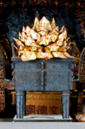
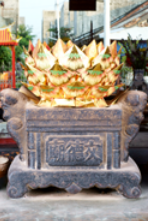

Thian Gong (Tuhan YME)
Pemujaan kepada Tuhan Yang Maha Esa (Pencipta Semesta Alam), menghadap ke langit lepas di serambi depan klenteng. Setiap sembahyang dupa wajib diawali dari altar ini.
Jumlah Dupa: 3 Batang Hio
Sebagai cagar budaya dan rumah ibadah suci yang telah berdiri sejak 1684, kami mengajak seluruh umat dan pengunjung untuk menjaga ketertiban serta kesucian suasana.
Saring daftar altar berdasarkan zonasi ruangan klenteng.
Pemujaan kepada Tuhan Yang Maha Esa (Pencipta Semesta Alam), menghadap ke langit lepas di serambi depan klenteng. Setiap sembahyang dupa wajib diawali dari altar ini.

Tiga Penguasa Tiga Alam: Alam Langit (Tian Guan pemberi berkah), Alam Bumi (Di Guan pengampun kekhilafan), dan Alam Air (Shui Guan pelenyap marabahaya).

Bodhisatwa Avalokitesvara (Dewi Welas Asih), Yang Mulia Suci Tuan Rumah Klenteng Boen Tek Bio sejak 1684. Mengajarkan welas asih dan pengorbanan tanpa batas bagi seluruh makhluk.

Guru Agung Junjungan Umat Buddha yang mengajarkan Empat Kebenaran Mulia dan Jalan Utama Berunsur Delapan untuk mengikis keserakahan, kebencian, dan kebodohan batin.

Dewa Bumi dan Pengelola Rezeki yang adil. Mengajarkan bahwa keberkahan sejati diperoleh melalui mata pencaharian yang jujur, kerja keras, dan kelestarian tanah.

Panglima Guan Yu dari Zaman Tiga Kerajaan (Samkok). Diteladani atas kesetiaan tanpa pamrih (Zhong), kejujuran janji (Xin), serta keteguhan membela keadilan moral.

Penghormatan kepada Laksamana Haji Muhammad Cheng Ho yang memimpin pelayaran persahabatan Tiongkok-Nusantara abad ke-15. Dihormati sebagai perintis akulturasi damai.

Dewa Penguasa Waktu dan Siklus Perbintangan 60 Tahun Jiazi. Umat yang menurut perhitungan astrologi shio berselisih waktu (Ciong) bersembahyang memohon ketenangan jiwa.